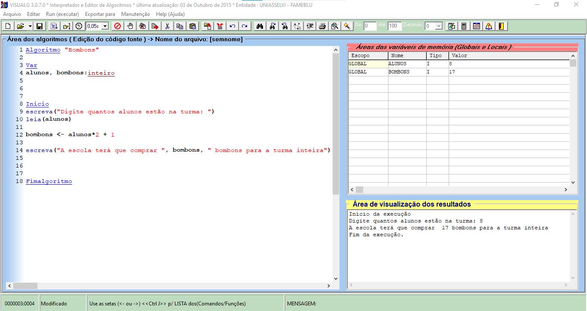

Olá,seja bem vindo a minha apresentação, hoje eu irei mostrar o meu progresso com o algoritmo 35.
O desafio era o seguinte:"Na volta às aulas cada aluno(a) ganhará 2 bombons (1 para si e 1 para os pais), além de 1 bombom para o(a) professor(a). Faça um programa no qual seja digitado a quantidade de alunos da turma e mostrando quantos bombons no total devem ser comprados " vamos solucionar esse desafio.
Essa seção é dedicada ao visuAlg, ele é uma plataforma de criação de pseudocódigo onde eu fiz a primeira versão do código, veja como funciona abaixo.
O pseudocódigo começa estabelecendo as variáveis estas sendo alunos e bombonons, em seguida nós vamos para a parte do pseudocódigo que necessita cumprir duas funções:
1 O pseudocódigo tem que possibilitar o usúario a informar a quantidade de alunos na sala.
2 Usar essa informação para calcular a quantidade de bombons necessária usando a fórmula "alunos * 2 + 1 " e responder a pergunta do desafio.
Podemos ver o resultado na direita no pequeno quadrado ao lado direito do pseudocódigo, o pseudocódigo cumpriu as funções com êxito e agora podemos seguir para o HTML e Javascript.